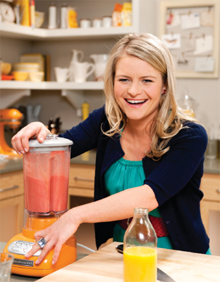

You know they’re supposed to be occasional treats that are hardly going to help you lose weight, but somehow you just can’t seem to resist them. Here we out some of the biggest offenders when it comes to calorie counts. The good news is you don’t have to give these up if you simply cook them the CYT way.

The Surprise Offenders
Generally, we know when we’re indulging in a guilty pleasure. As you close your eyes and savor that first bite of rich, luscious, chocolate mousse pie, you know you’re not fooling anyone, least of all yourself. It’s a decadent thrill that tastes all that much better for being naughty. But what about those everyday foods that look so innocent? The trouble with so-called diet foods is they often taste bland and don’t fill you up—leading to the dreaded snack attack later.
Sometimes, despite our most virtuous intentions, the calories just slip past our radar. You think you’re munching away on a super-healthy snack when you might just as well have had a buttery scone and be done with it.
Some salty foods contain surprising amounts of sugar. Likewise, products that boast they’re “low fat” often compensate by being high in sugar. Don’t let foods like these fool you with their healthy façade. It’s not that they’re outright bad for you and that you should give them up—far from it. A fruit smoothie is a great way to get your vitamins, and olive oil has countless beauty and health benefits. Just keep your eye on them—it’s worth noting their calorie counts if these items crop up more than two or three times in your food diary.
The Main Offenders
Alcohol—It’s fun but full of empty calories, especially if it’s dark or sweet.
Cereal—Sugary cereals tend to be higher in calories than high-fiber cereals and far less satisfying.
Granola bars—They may look healthy, but check the label.
Frozen french fries—Watch out for those coated in high-calorie seasoning.
Nuts—They’re full of vitamins and minerals, but don’t overdo it. Choose raw over roasted.
“Good oils”—They’re a dietary essential, just watch how much you slosh on.
Peanut butter—It’s good for you, but spread it thin.
Movie popcorn—Smuggle in your own for a fraction of the calories and cost.
Deli sandwiches—Watch out for mayo and other extras.
Store-bought salads—Dressings, croutons, fatty meat, and cheese can turn a light lunch into a calorie-laden pig out.
Fruit smoothies—Go for fruity rather than yogurty and check for added sugar.
Soup and dressings—Check for hidden sugar and cream, or even better make your own (see pages 102, 173, 192).
Toast with butter—It’s easy to OD on butter when it melts into the bread.
Veggie burger—Extra fat is often used to boost flavor.
Yogurt—It sounds healthy and often is, but some are high in fat and sugar. Check before you buy.
It’s Sugar, but Not as You Know It
Food companies have canny ways of concealing a food’s sugar content from us. For instance, they’ll list different types of sugars separately. Check the label for:
• Corn syrup
• Dextrose
• Fructose
• Fruit sugar
• Glucose
• High fructose corn syrup/glucose syrup
• Hydrolyzed starch
• Lactose
• Maltose
• Molasses
• Sucrose
Fact
A fruit smoothie is a great way to get your vitamins, and olive oil has countless beauty and health benefits.